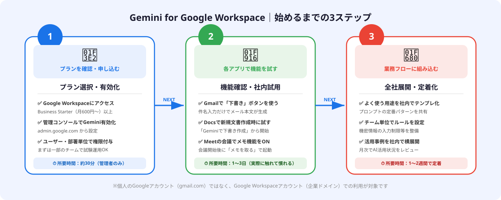
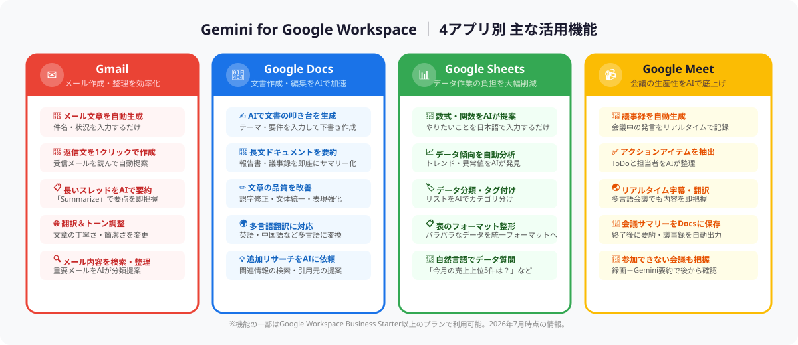

Gemini for Google Workspaceとは？
Gemini for Google Workspaceは、GoogleのAI「Gemini」をGmailやGoogle Docs、Sheets、MeetなどのビジネスアプリケーションにAI機能として組み込むサービスです。スタンドアローンのAIチャットツール（gemini.google.com）とは異なり、普段使っているGoogleアプリの中でAIが使えるのが最大の特徴です。
たとえばGmailでメールを書くとき、「件名と状況を入力するだけでAIが本文を下書き」してくれます。Google Docsでは「テーマを入力するだけで文書の叩き台を生成」、Google Meetでは「会議中の議事録をAIが自動作成」してくれます。アプリの切り替えなく、作業の流れの中でAIを活用できるのが最大のメリットです。
💡 ChatGPT・Claude との違い
ChatGPTやClaudeは別タブで開いてコピー&ペーストする手間が発生します。Gemini for Google WorkspaceはGmailやDocsの画面内でそのまま使えるため、コンテキストの切り替えコストがゼロです。特にGoogle Workspaceをメインに使っている職場での効果が顕著です。
利用できるプランと費用
Gemini for Google WorkspaceのAI機能は、Google Workspaceの有料プランに含まれています（2026年7月時点）。
| プラン | 月額（1ユーザー） | GeminiのAI機能 |
|---|---|---|
| Business Starter | 約600円〜 | Gmail・Docs・Sheetsの基本AI機能 |
| Business Standard | 約1,300円〜 | 上記＋Meet議事録自動作成・高度な要約 |
| Business Plus | 約2,200円〜 | 上記＋高度なセキュリティ・管理機能 |
| Enterprise | 要見積 | 全AI機能＋カスタマイズ・高度な管理 |
すでにGoogle Workspaceのビジネスプランを契約している企業は、追加コストゼロ、または最小コストでGeminiのAI機能を有効化できる可能性があります。まず自社の契約プランを確認してみましょう。
有効化から使い始めるまでの3ステップ
Gemini for Google WorkspaceのAI機能を使い始めるには、管理者による有効化と、各ユーザーが実際に触れてみることが必要です。

STEP 1：プランを確認・有効化する（管理者作業）
Google管理コンソール（admin.google.com）にアクセスし、「アプリ」→「Workspace の Google アプリ」→「設定」からGeminiのAI機能が有効になっているか確認します。Business Starter以上のプランでは、デフォルトで有効になっているケースが多いですが、組織のポリシーによって無効化されている場合もあります。所要時間は約30分です。
STEP 2：各アプリで機能を実際に試す（ユーザー作業）
有効化後は、まずGmailで「メールを作成」ボタンの近くに表示される「Geminiで下書きを作成」ボタンを探してみてください。次にGoogle Docsで新規文書を開くと「Geminiで下書きを作成」が表示されます。1〜3日かけて実際に使ってみることで、どの機能が自分の業務に合うかがわかります。
STEP 3：業務フローに組み込む（チーム展開）
個人で使い方を把握したら、チームや部署にナレッジを共有します。よく使うプロンプトのパターンをドキュメントにまとめて社内共有する、月次でAI活用事例を共有する場を設けるなどの工夫で、定着化が加速します。
Gmailでの活用：メール作成・返信を効率化
Geminiを使ったGmailの活用は、最も即効性があります。特に定型的なやり取りが多い営業メール・社内連絡・取引先への報告メールでは、作業時間を大幅に削減できます。
主な活用方法：
- メール本文の自動生成：新規作成画面で「Geminiで下書きを作成」をクリックし、件名と伝えたいポイントを入力するだけで本文が生成されます
- 返信文の自動提案：受信メールを開いた状態でGeminiを起動すると、メールの内容を読んで返信案を提案してくれます
- 長いスレッドの要約：「このスレッドを要約して」と入力するだけで、長いメール往来の要点を数行にまとめてくれます
- 文体・トーンの調整：生成された文章に対して「もっと丁寧に」「箇条書きにして」「英語に翻訳して」などの追加指示が可能です
📝 実際のプロンプト例（Gmail）
「株式会社〇〇の〇〇様へ、先日の打ち合わせのお礼と、来週の資料送付の連絡をする。丁寧なビジネスメールで200字程度で書いて。」
このように状況と文字数を具体的に伝えると、精度の高い下書きが生成されます。
Google Docsでの活用：文書作成・要約・翻訳
Google Docsでは、GeminiがAI文書アシスタントとして動きます。報告書・提案書・マニュアルなどの定型文書作成において特に威力を発揮します。

主な活用方法：
- 文書の叩き台生成：新規文書でGeminiを起動し「〇〇に関する提案書を書いて。目的は〇〇で、読者は〇〇部長」と入力するだけで構成付きの下書きが生成されます
- 長文の要約・サマリー作成：既存の長い文書を貼り付け「この文書を300字で要約して」と指示できます。会議前の資料把握に便利です
- 文章品質の改善：作成した文章に対して「誤字を直して」「箇条書きにして」「もっと簡潔にして」といった編集指示が可能です
- 多言語翻訳：「英語に翻訳して」「中国語に翻訳して」と入力するだけで、文書全体または選択した部分を翻訳できます
特に便利なのは、既存の社内文書・議事録・メールの文章をDocsに貼り付けて、Geminiに要約・再構成させるワークフローです。情報の整理コストが大幅に下がります。
Google Sheetsでの活用：数式補完とデータ整理
Google SheetsのGemini機能は、Excelや関数に不慣れなビジネスパーソンにとって特に心強い機能です。「やりたいことを日本語で入力するだけで、必要な数式を提案してくれる」のが最大の特徴です。
主な活用方法：
- 数式・関数の提案：Sheetsのサイドパネルで「A列の合計をB列の条件でフィルタして出したい」と入力すると、対応するSUMIF関数などを提案してくれます
- データの傾向分析：「このデータで売上が高い月はどこか」「異常値がある行はどれか」といった質問をすると、AIが分析してくれます
- データの分類・タグ付け：テキストリスト（顧客名・商品名など）をカテゴリ分けしたいとき、「このリストをA・B・Cのカテゴリに分類して」と指示するだけで自動分類されます
- 表のフォーマット整形：コピー&ペーストしたバラバラなデータを「統一フォーマットに整えて」と指示して整形できます
📊 Sheetsで特に便利なユースケース
「顧客リスト500件のうち、都道府県が空欄になっている行を抽出して」「このアンケートの自由記述欄をポジティブ/ネガティブ/中立で分類して」——こうした繰り返し作業の自動化が、Gemini × Sheetsの組み合わせで実現できます。
Google Meetでの活用：議事録の自動生成
Google MeetのGemini機能（Business Standard以上で利用可能）は、会議の生産性を直接的に向上させます。特に議事録担当者の負担軽減と欠席者のキャッチアップ効率化に大きな効果があります。
主な活用方法：
- リアルタイム議事録の自動生成：会議開始後に「メモを取る」ボタンをONにすると、発言内容をAIがリアルタイムで記録します。会議終了後にGoogle Docsへ自動保存されます
- アクションアイテムの自動抽出：議事録から「誰が・何を・いつまでに」というToDoをGeminiが自動抽出してくれます
- リアルタイム字幕・翻訳：外国語の会議でも字幕をリアルタイムで表示。英語・中国語などへの翻訳字幕表示も可能です
- 録画した会議のサマリー生成：会議に参加できなかった場合でも、録画＋Gemini要約を使えば短時間で内容を把握できます
議事録作成の自動化については、「議事録作成をAIで自動化する手順」でさらに詳しく解説しています。あわせてご参照ください。
注意点と運用のコツ
Gemini for Google Workspaceを業務で活用する際は、以下の点に注意が必要です。
① 機密情報・個人情報の入力に注意する
GoogleはWorkspaceのデータをGeminiのモデルトレーニングに使用しないと明言していますが、社内ルールとして「顧客の個人情報・機密性の高い契約情報はAIに入力しない」というガイドラインを設けておくことを推奨します。
② 生成内容は必ず確認・編集する
AIが生成したメール・文書・要約には誤りや不自然な表現が含まれることがあります。そのまま使うのではなく、人間が確認・編集したうえで送信・共有することが大前提です。
③ 管理者と利用者でルールを統一する
機能の有効・無効化は管理者が一元管理できます。組織全体で「Geminiを使ってよい用途・使ってはいけない用途」を事前に整理し、ガイドラインとして共有しておくと、混乱なく展開できます。
④ まず「1つのアプリ・1つの用途」から始める
全機能を一度に使いこなそうとせず、まずGmailのメール下書き生成から始めて慣れていくのが最も定着しやすいアプローチです。効果を実感したチームメンバーが自発的に広めてくれるようになります。
よくある質問
- Q. Gemini for Google Workspaceはどのプランで使えますか？
- A. 対象のBusiness/Enterpriseプラン等で利用でき、プランによって機能範囲が異なります。
- Q. Gmailでどう活用できますか？
- A. メールの下書き作成や返信文の自動生成で、日常のメール対応を効率化できます。
- Q. 使い始めるにはどうすればいいですか？
- A. 管理者による有効化後、Gmail・Docs・Sheets等の画面から3ステップですぐ使い始められます。
まとめ
Gemini for Google Workspaceは、すでにGoogle Workspaceを使っている企業にとって追加導入コストが最小で始められるAI機能です。Gmail・Docs・Sheets・Meetのそれぞれで、日常業務の繰り返し作業を大幅に効率化できます。
- メール作成・返信の効率化 → Gmail × Gemini
- 文書作成・長文要約・翻訳 → Google Docs × Gemini
- 数式補完・データ整理・分類 → Google Sheets × Gemini
- 議事録自動生成・ToDoの抽出 → Google Meet × Gemini
まずは管理コンソールでGeminiのAI機能が有効になっているか確認し、1つのアプリで試してみることから始めてみてください。「AIを使う」という特別な準備なく、普段の業務の延長線上でAIを体験できます。
🔧 「Gemini連携ツールを自社仕様にカスタマイズしたい」方へ
Gemini for Google Workspaceを活用した社内ツールの開発・カスタマイズ（AppScript連携・データ連携・自動化フロー構築など）を検討中の企業は、ANKENのスポット発注をご活用ください。Google Workspaceの開発経験があるエンジニアが週末・スポット対応で請け負います。
Gemini API連携・AppScript自動化・スプレッドシートBot開発など、Google Workspace環境でのAI開発をスポットで依頼できます。固定費ゼロ・週末対応も可能です。
👉 無料でスポット依頼を相談する初回相談は無料です。要件が固まっていなくてもOKです。